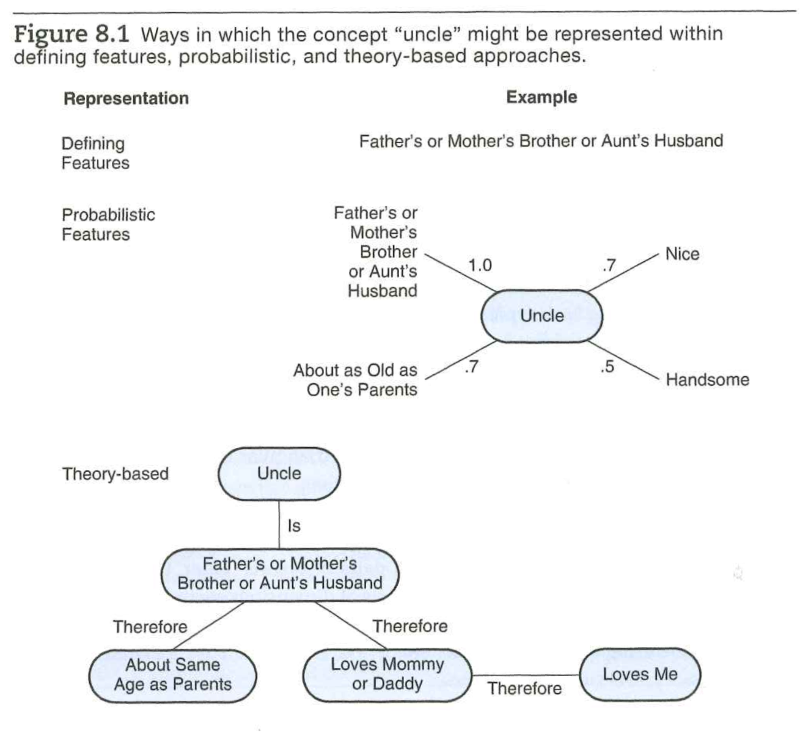
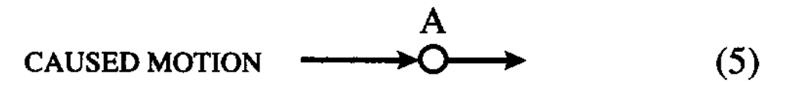

flowchart TD A[Entity_A] ---|is seen in| M[motion] M ---|looks like| S[self-motion] M ---|looks| U[unpredictable] B ---|is seen as| N[not moving] S & U ---|implies| C[animacy] C ---|is property of| A
Conceptual development
2025-12-05
Rick Gilmore
Department of Psychology
Prelude
Today’s topics
Conceptual development
Before (beyond?) concepts
To be able to recognize the same thing again as it evidences itself to one’s senses in a multiplicity of ways, thus affording multiple opportunities to accumulate and apply information about it is…the most central challeng there is for cognition.
– Millikan (2017)

Conceptual representations
- Defining features
- Probabilistic
- Theory-based

Younger \(\neq\) older?
- Thematic vs. taxonomic grouping depends on task/context
Note
Differences in language comprehension complicate task development and interpretation.
Sources of probabilistic representations
- Cue validities
- e.g., P(birds fly) vs. P(non-birds fly)
- Category level

Sources of probabilitic representations
Correlations among features
Prototypes
What statistics do children capture from individual experiences?
Theory-based representations
- Concepts as partial theories
- From what to why
- Causal relations
- Hierarchical relationships
Concepts about what: Core theories
- (naive) Physics
- People
- (naive) Psychology
- (naive) Sociology
Concepts about what
- Space
- From ego to allocentrism
- Time
- Simultaneity
- Sequential relations
- Durations

Job, Kirsch, & Auvray (2022) Figure 1

Frith & Vignemont (2005) Figure 1
Regarding simultaneity and sequences
- Stroboscopic effect: https://www.youtube.com/shorts/UFvTrL2cGMo
- Within sensory streams vs. between
- 20 ms from event to auditory cortex
- vs. 100 ms to visual cortex
How to build a baby?
How to build a baby
- Infants engage in perceptual and conceptual categorization
- Perceptual analysis
- Recoding perceptual information into a non-perceptual form
- Image schemas as conceptual primitives
- Possible grounding for symbolic representation
Illustrations
- Animacy
- self-instigated vs. caused
- contingency of motion


Contingency
- Between events/agents

Caused motion
 

Agency
AGENCY is represented as an animate object, A, that moves itself and also causes another object, B, to move
– @J. M. Mandler (1992)
flowchart TD A ---|makes contact with| B[Entity_B] B ---|is seen in| N[motion] N ---|looks| T[not to be self-moving] N ---|looks| P[predictable] T & P ---|implies| D[inanimacy] D ---|is property of| B
Naive psychology
Student Presentation N
Wrap-up
Next time…
Next time…
- Student Presentation O: Poverty is bad for cognition. (Presenter: Yeonjin Kim; Discussant: TBD)
- Student Presentation P: Poverty can be adaptive for cognition. (Presenter: Caesar Liu; Discussant: Natalie Byrd)
Resources
About
This talk was produced using Quarto, using the RStudio Integrated Development Environment (IDE), version Sys.getenv(“RSTUDIO_VER”).
The source files are in R and R Markdown, then rendered to HTML using the revealJS framework. The HTML slides are hosted in a GitHub repo and served by GitHub pages: https://psu-psychology.github.io/psy-548-fall/
References
Amso, D. (2020). Neighborhood poverty and brain development: Adaptation or maturation, fixed or reversible?: Adaptation or maturation, fixed or reversible? JAMA Network Open, 3, e2024139. https://doi.org/10.1001/jamanetworkopen.2020.24139
Bronfenbrenner, U. (1977). Toward an experimental ecology of human development. The American Psychologist, 32, 513–531. https://doi.org/10.1037/0003-066x.32.7.513
Ding, X. P., Wellman, H. M., Wang, Y., Fu, G., & Lee, K. (2015). Theory-of-mind training causes honest young children to lie. Psychological Science, 26, 1812–1821. https://doi.org/10.1177/0956797615604628
Frankenhuis, W. E., Panchanathan, K., & Nettle, D. (2016). Cognition in harsh and unpredictable environments. Current Opinion in Psychology, 7, 76–80. https://doi.org/10.1016/j.copsyc.2015.08.011
Frankenhuis, W. E., Vries, S. A. de, Bianchi, J., & Ellis, B. J. (2020). Hidden talents in harsh conditions? A preregistered study of memory and reasoning about social dominance. Developmental Science, 23, e12835. https://doi.org/10.1111/desc.12835
Frith, U., & Vignemont, F. de. (2005). Egocentrism, allocentrism, and asperger syndrome. Consciousness and Cognition, 14, 719–738. https://doi.org/10.1016/j.concog.2005.04.006
Hartley, C. A. (2022). How do natural environments shape adaptive cognition across the lifespan? Trends in Cognitive Sciences, 26, 1029–1030. https://doi.org/10.1016/j.tics.2022.10.002
Job, X. E., Kirsch, L. P., & Auvray, M. (2022). Spatial perspective-taking: Insights from sensory impairments. Experimental Brain Research, 240, 27–37. https://doi.org/10.1007/s00221-021-06221-6
Mandler, J. (1988). How to build a baby: On the development of an accessible representational system☆. Cognitive Development, 3, 113–136. https://doi.org/10.1016/0885-2014(88)90015-9
Mandler, J. M. (1992). How to build a baby: II. Conceptual primitives. Psychological Review, 99, 587–604. https://doi.org/10.1037/0033-295x.99.4.587
Mandler, J. M. (2005). How to build a baby: III. Image schemas and the transition to verbal thought. From Perception to Meaning: Image Schemas in Cognitive Linguistics, 137–163. Retrieved from https://www.academia.edu/download/30476938/from_perception_to_meaning_image_schemas_in_cognitive_linguistics.pdf#page=150
Millikan, R. G. (2017). Beyond concepts: Unicepts, language, and natural information. London, England: Oxford University Press. https://doi.org/10.1093/oso/9780198717195.001.0001
Onishi, K. H., & Baillargeon, R. (2005). Do 15-month-old infants understand false beliefs? Science (New York, N.Y.), 308, 255–258. https://doi.org/10.1126/science.1107621
Oyama, S., Griffiths, P. E., & Gray, R. D. (2001). Cycles of contingency: Developmental systems and evolution. Xii, 377. Retrieved from https://psycnet.apa.org/record/2001-06709-000
Siegler, R., & Alibali, M. (2021). Children’s Thinking (5th ed.). Pearson.
Taylor, R. L., Cooper, S. R., Jackson, J. J., & Barch, D. M. (2020). Assessment of neighborhood poverty, cognitive function, and prefrontal and hippocampal volumes in children. JAMA Network Open, 3, e2023774. https://doi.org/10.1001/jamanetworkopen.2020.23774
Wellman, H. M. (2012). Theory of mind: Better methods, clearer findings, more development. The European Journal of Developmental Psychology, 9, 313–330. https://doi.org/10.1080/17405629.2012.680297